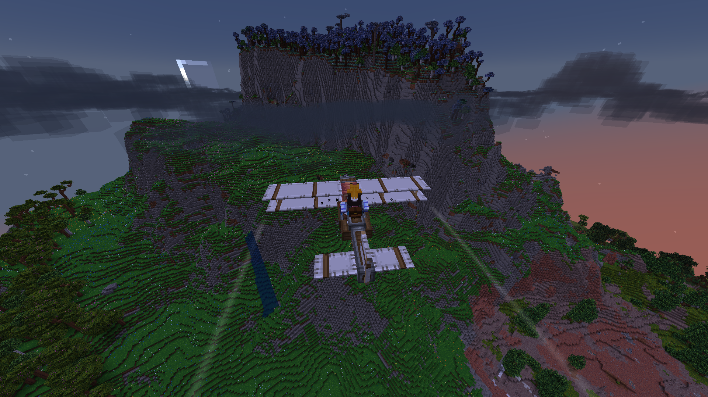
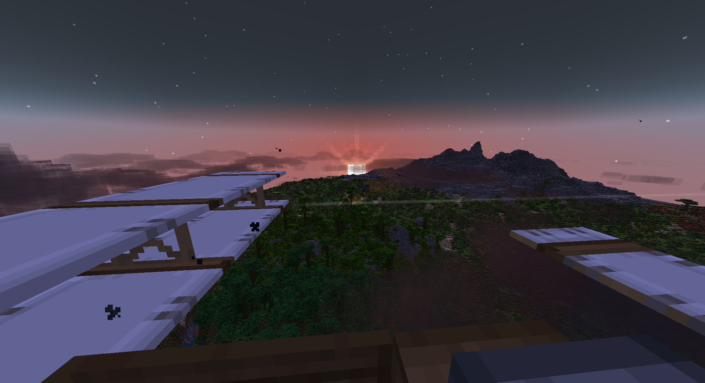
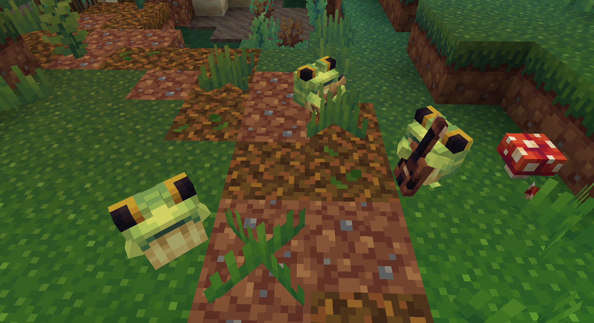
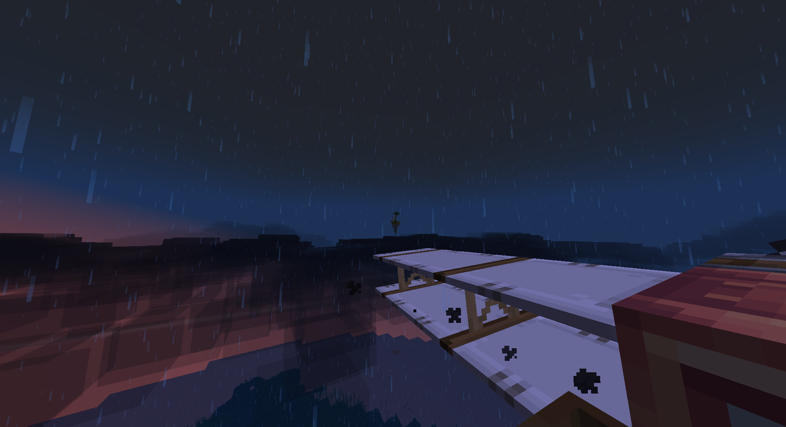
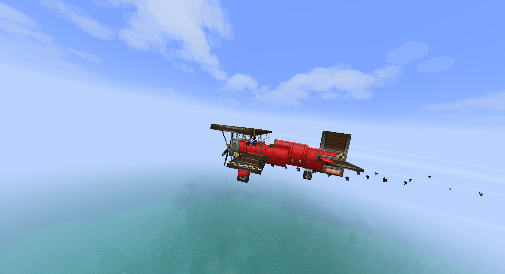
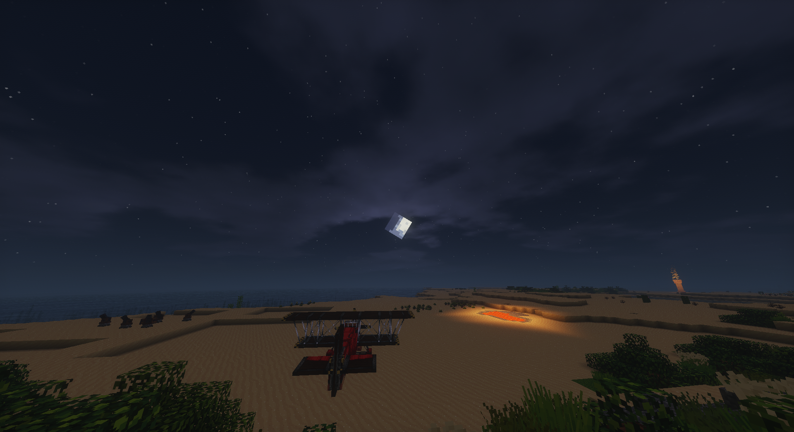
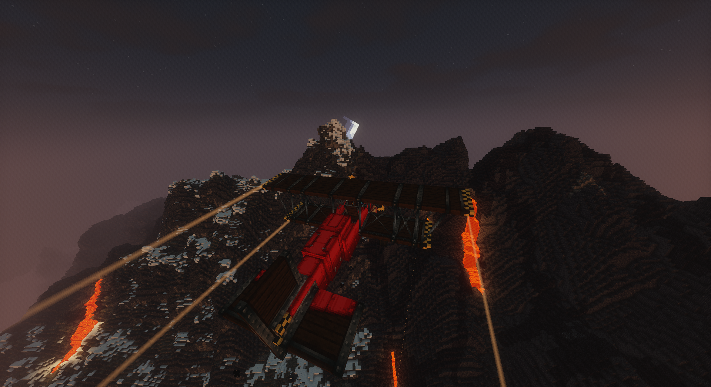
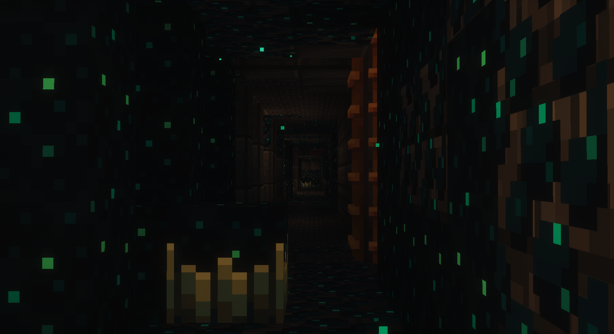
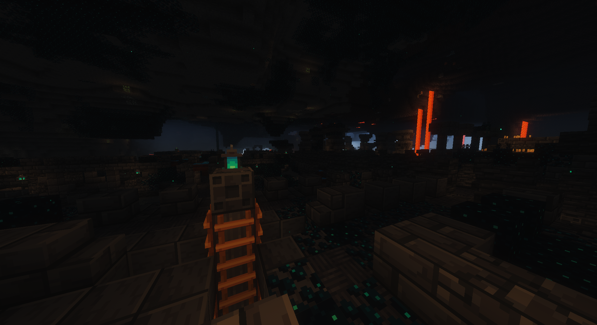

Questioning to why there's so many gallery-based project, but, here we are.

Flying pass the tall mountain

Sunsetting while passing the jungle forest

Ribbits in a swamp villages 12000 blocks away from home

A small floating island on the distance while sunsetting

Flying pass a cloudy ocean

Chilly night with my plane

Mountain climbing, again (this one is 302 blocks high)

Small crowded path way in Ancient City

Ancient City surely is very dark with shader enabled